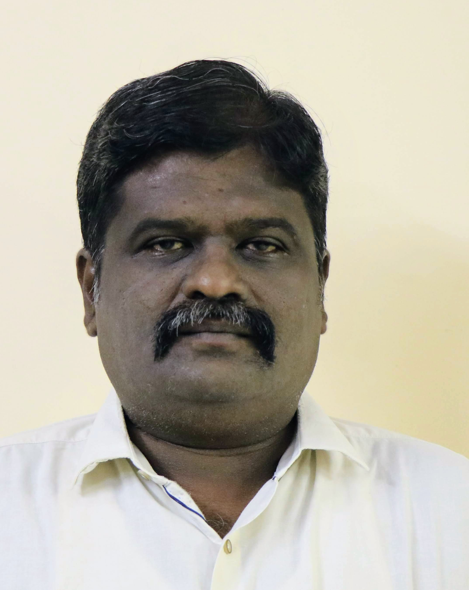
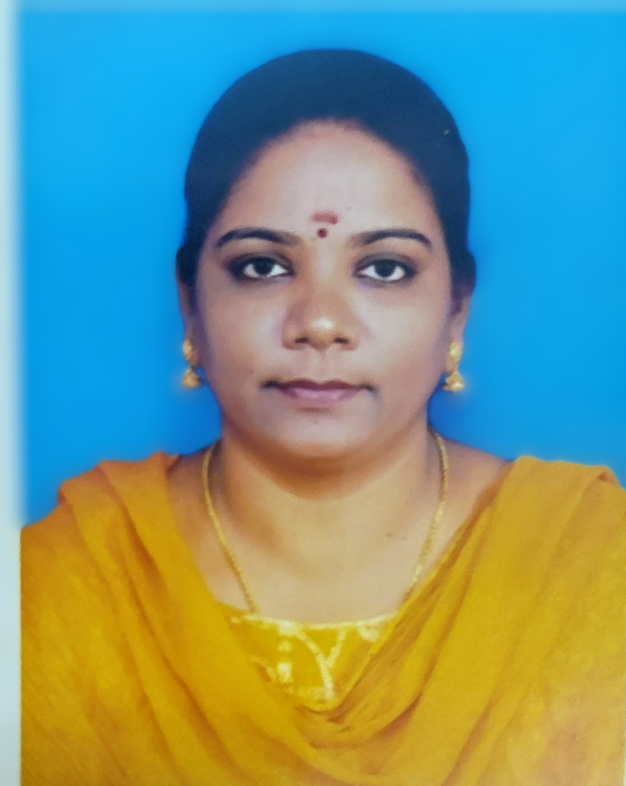
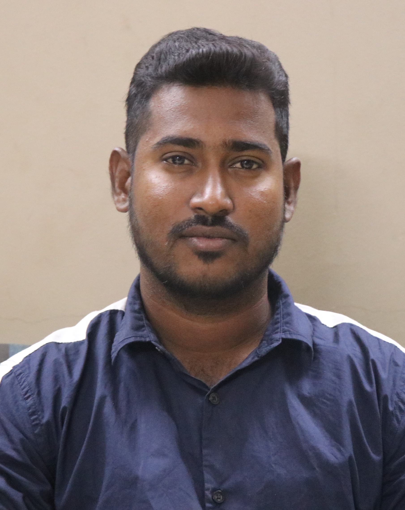

PYRA – PONDICHERRY YELLOW RIBBON ASSOCIATION is for helping people in need, financially to undergo medical treatment. Also, our PYRA Foundation believes in quality treatment for one and all and it aims to be a platform between like-minded people in coming together to make a positive impact in our society.
It all started out as an idea when I first kept my WhatsApp status asking for a small donation for a particular treatment for a patient. And by God's Grace, with the help of my friends and family who were able to donate, we managed to give the required amount for their treatment, and that's when my professor asked me if I could open a WhatsApp group for it, and then the idea of opening a foundation came out, and I wanted to create a platform for like-minded people to come together for a good cause.
R. Ayappasamy
Co – Founder and Managing Director
PYRA – PONDICHERRY YELLOW RIBBON ASSOCIATION

Mr. R. Ayappasamy
Managing Director
We are a group of likeminded people, which includes three trustees, a founder and a co-founder. One of our trustee is a Chartered Accountant, and it is found by a group of similar minded individuals from various organizations, with the goal of fostering a long-lasting partnership between business and people, to raise money for the welfare of people to undergo medical treatment. We, as a team, aim to help people to attain proper treatment and care and do the needed for them to get on their feet all healthy and good. We have an 80G certificate which exempts our donators from their income tax.
Jayanth is an Assistant Professor at OP Jindal Global University, Delhi. He is a CA, CS and PhD in economics from IIM Kozhikode. He has prior experience of working with NGOs and actively undertakes research in areas of development. He is passionate about philanthropy and finds happiness in others happiness.
Dr. Jayanth CA
Trustee

Founder and Managing Trustee
Managing Director

Trustee
Research Associate of ISBR business school Bangalore
Trustee
Assistant Professor at OP Jindal Global University
Trustee
No one has ever become poor from giving.
Donate Now